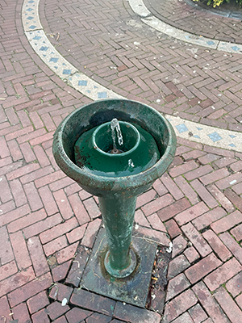
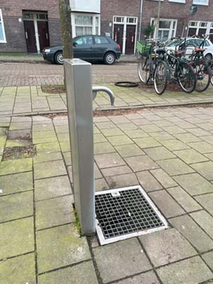

Watertappunten kunnen het gebruik van plastic flessen verminderen. Dit stimuleert het gebruik van herbruikbare flessen en er worden dan minder plastic flessen gekocht. Dit vermindert de productie van plastic en helpt bij het verminderen van de hoeveelheid plastic afval in het milieu. Plastic verteert niet dus het komt vaak gewoon op straat te liggen. Dit kan negatieve gevolgen hebben voor de dieren die leven in het gebied.
Het gebruik van watertappen zorgt ook voor minder energie naar het bottelen en transporteren van water. Het proces van het maken van plastic flessen en het vullen met water kost veel energie en draagt bij aan de uitstoot van broeikasgassen. Met watertappunten wordt de vraag naar water flessen vermindert en dat zorgt voor minder CO2-uitstoot.
Het gebruiken van watertappunten zorgt ook voor de berscherming van natuurlijke waterbronnen. In plaats van water uit rivieren en bronnen te halen, kunnen we gebruik maken van leidingwater dat al beschikbaar is voor ons. Dit helpt bij het behouden can natuurlijke watercycles en zorgt er voor dat voldoende water overblijft voor andere doeleinden, zoals natuurbehoud en landbouw.